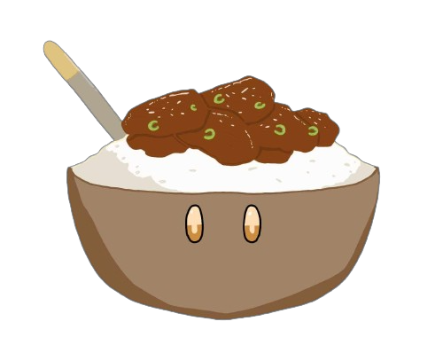

HOME
CATEGORIES
KITCHEN TIPS
ESSENTIALS
ABOUT
All Recipes
By Ingredients ⏷
Chicken
Beef
Pork
Seafood
Noodles
Rice
Dessert
By Cooking Time ⏷
≤ 10 minutes
20 minutes
30 minutes
1 hour
> 1 hour
By Day Time ⏷
Breakfast
Lunch
Dinner
By Cooking Method ⏷
Boil
Fry
Steam
Bake
Grill
Stew
Air Fry
Slow Cook
Chocolate Chip Cookie Mug
Spicy Stir-fry Noodles
Chicken Fricassée
Honey Garlic Chicken Wings
Samgyeopsal
Chicken and Rice Porridge
Beef Lumpia
Easy Breakfast Quesadillas
Pork Adobo
Beef Nilaga
Mongolian Beef
Fried Rice
Burrito Stuffed Chicken
Beef Udon
Churros
Croquettes
Steamed Fish
Spicy Tuna Onigiri
Shrimp Stir-fry Noodles
Chinese Pork Meatballs
Breaded Pork Loin
(Tonkatsu)
Chicken & Egg Rice Bowl (Oyakadon)
Japanese Pancakes
(Okonomiyaki)
Chicken Pancit
Garlic Mushroom Chicken
Pork Tocino
Mongolian Chicken
Sweet and Sour Pork
Carbonara
Fish Cake Soup
(Eomukguk)
Korean Fried Chicken Bites
Ground Beef Cheesesteak
Korean Chicken Lettuce Wraps
Beef with Brocolli
Garlic Chicken Pasta
Cinnamon Breakfast Bites
Bistek
Creamy Banana Crepes
Korean Seaweed Soup
Cranberry Pie
Gochujang Shrimp Lettuce Wraps
Beef Meatballs in Mushroom Gravy
Shrimp Balls Soup
Breakfast Wraps
Japanese Egg Sandwich
(Tamago Sando)
Crab Croquettes
Dango
Garlic Butter Steamed Clams
French Toast
Mango Graham Cake
Beef Wellington
Mais Con Queso Ice Candy
Scroll to Top